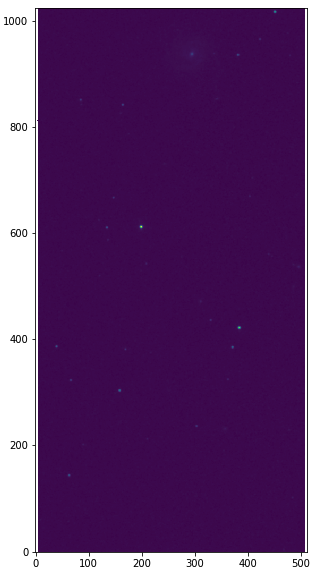
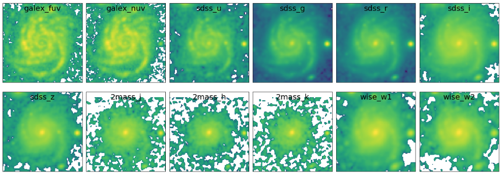
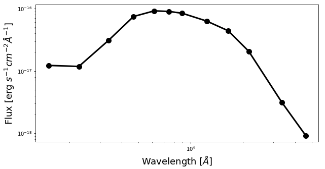

Image processing¶
In the analysis of spatially resolved SED of galaxy, it is important to make sure that the multiwavelength images used are all matched to the same spatial resolution (i.e., PSF size) and sampling (i.e., pixel size), so that a given pixel represents the same region on the sky. Such an image processing can be performed using the piXedfit_images module. This module is a python scripting module that combines various useful functions in Astropy, photutils, and reproject such that an image processing task for a combination of imaging data can be done automatically.
Before image processing, one need to make sure that the images are all background-free (i.e., background have been subtracted from the images), which are then called as science images. If this is not the case, background subtraction can be performed using piXedfit.piXedfit_images.subtract_background() funciton, which will be described further below. After that, one need to construct variance images, which are the square of uncertainty images. For known images, this task can be done using various functions in the piXedfit_images module. Once science and variance images have been constructed, image processing can be performed using the piXedfit.piXedfit_images.images_processing class. The process basically performs PSF matching and spatial resampling and reprojection to the multiwavelength images.
Background subtraction¶
Suppose we have a 2MASS/J image as shown below (downloaded from 2MASS website), which is not background-free.
import numpy as np from astropy.io import fits import matplotlib.pyplot as plt # open FITS file hdu = fits.open("aJ_asky_001022s0620186.fits") # plot the image plt.figure(figsize=(5,10)) plt.imshow(np.log10(hdu[0].data), origin='lower') hdu.close()
Background subtraction on this image can be performed using piXedfit.piXedfit_images.subtract_background() funciton.
This function produces background image, RMS image, and background-subtracted science image.
from piXedfit.piXedfit_images import subtract_background fits_image = "aJ_asky_001022s0620186.fits" subtract_background(fits_image, sigma=3.0, box_size=[100,100], mask_sources=True)
sigma is the threshold value for the sigma clipping, box_size is box size in image gridding, mask_sources is a flag stating whether to mask the astroomical sources (i.e., objects) within the image. If set as True, source detection and segmentation will be performed using SEP. Please see the API reference for more detail information about this function.
The outputs are: skybg_aJ_asky_001022s0620186.fits, skybgrms_aJ_asky_001022s0620186.fits, and skybgsub_aJ_asky_001022s0620186.fits. Let’s plot the background and science images.
# background image hdu = fits.open("skybg_aJ_asky_001022s0620186.fits") plt.figure(figsize=(5,8)) plt.imshow(np.log10(hdu[0].data), origin='lower', cmap='gray') plt.colorbar() hdu.close() # background-subtracted image hdu = fits.open("skybgsub_aJ_asky_001022s0620186.fits") plt.figure(figsize=(5,8)) plt.imshow(np.log10(hdu[0].data), origin='lower') hdu.close()


Constructing variance images¶
For constructing variance (i.e., square of the uncertainty) images, there are various functions provided in piXedfit. Depending on the imaging data, one can choose the appropriate function. Available functions are: var_img_2MASS(), var_img_GALEX(), var_img_WISE(), and var_img_sdss() for 2MASS, GALEX, WISE, and SDSS imaging data. These functions calculate variance of the pixel values following prescriptions provided in the relevant information or literature associated with the surveys. For other imaging data, one need to construct uncertainty image or weight (i.e., inverse variance) image and then use var_img_from_unc_img() or var_img_from_weight_img() functions, which are also provided in the piXedfit_images module.
In the following, we will demonstrate how to construct variance image from 2MASS and SDSS images. First, we will construct variance image of the 2MASS/J image that we have substracted the background in the previous step.
from piXedfit.piXedfit_images import var_img_2MASS sci_img = "skybgsub_aJ_asky_001022s0620186.fits" skyrms_img = "skybgrms_aJ_asky_001022s0620186.fits" var_img_2MASS(sci_img=sci_img, skyrms_img=skyrms_img)
This process will produce var_skybgsub_aJ_asky_001022s0620186.fits. Let’s plot variance image.
hdu = fits.open("var_skybgsub_aJ_asky_001022s0620186.fits") plt.figure(figsize=(5,8)) plt.imshow(np.log10(hdu[0].data), origin='lower') hdu.close()

Now, let’s try constructing variance image from SDSS image frame-u-001740-3-0115.fits (downloaded from the SDSS website).
from piXedfit.piXedfit_images import var_img_sdss fits_image = "frame-u-001740-3-0115.fits" var_img_sdss(fits_image, filter_name='sdss_u')
This will produce var_frame-u-001740-3-0115.fits.
hdu = fits.open("var_frame-u-001740-3-0115.fits") plt.figure(figsize=(10,4)) plt.imshow(np.log10(hdu[0].data), origin='lower') hdu.close()

Performing image processing¶
Next, we will perform image processing. In this example, we will analyze NGC 309 galaxy using 12-band imaging data from GALEX, SDSS, 2MASS, and WISE (W1 and W2). This task can be done using the piXedfit.piXedfit_images.images_processing class. In the following, only brief overview of the steps are described. A more complete tutorials can be seen in FUV to NIR images processing or here. The images_processing class can also be used for analysis of FUV–FIR data as demonstrated in another tutorial: FUV to FIR images processing.
First, we have to set up the input.
# call images_processing from piXedfit.piXedfit_images import images_processing # list the filters filters = ['galex_fuv', 'galex_nuv', 'sdss_u', 'sdss_g', 'sdss_r', 'sdss_i', 'sdss_z', '2mass_j', '2mass_h', '2mass_k', 'wise_w1', 'wise_w2'] # input science images sci_img = {} sci_img['galex_fuv'] = 'GI1_009100_NGC0309-fd-intbgsub.fits' sci_img['galex_nuv'] = 'GI1_009100_NGC0309-nd-intbgsub.fits' sci_img['sdss_u'] = 'frame-u-001740-3-0115.fits' sci_img['sdss_g'] = 'frame-g-001740-3-0115.fits' sci_img['sdss_r'] = 'frame-r-001740-3-0115.fits' sci_img['sdss_i'] = 'frame-i-001740-3-0115.fits' sci_img['sdss_z'] = 'frame-z-001740-3-0115.fits' sci_img['2mass_j'] = 'skybgsub_aJ_asky_001022s0620186.fits' sci_img['2mass_h'] = 'skybgsub_aH_asky_001022s0620186.fits' sci_img['2mass_k'] = 'skybgsub_aK_asky_001022s0620186.fits' sci_img['wise_w1'] = 'skybgsub_0138m107_ac51-w1-int-3_ra14.177751925_dec-9.913864294_asec1000.000.fits' sci_img['wise_w2'] = 'skybgsub_0138m107_ac51-w2-int-3_ra14.177751925_dec-9.913864294_asec1000.000.fits' # input Variance images var_img = {} var_img['galex_fuv'] = 'var_GI1_009100_NGC0309-fd-intbgsub.fits' var_img['galex_nuv'] = 'var_GI1_009100_NGC0309-nd-intbgsub.fits' var_img['sdss_u'] = 'var_frame-u-001740-3-0115.fits' var_img['sdss_g'] = 'var_frame-g-001740-3-0115.fits' var_img['sdss_r'] = 'var_frame-r-001740-3-0115.fits' var_img['sdss_i'] = 'var_frame-i-001740-3-0115.fits' var_img['sdss_z'] = 'var_frame-z-001740-3-0115.fits' var_img['2mass_j'] = 'var_skybgsub_aJ_asky_001022s0620186.fits' var_img['2mass_h'] = 'var_skybgsub_aH_asky_001022s0620186.fits' var_img['2mass_k'] = 'var_skybgsub_aK_asky_001022s0620186.fits' var_img['wise_w1'] = 'var_0138m107_ac51-w1-unc-3_ra14.177751925_dec-9.913864294_asec1000.000.fits' var_img['wise_w2'] = 'var_0138m107_ac51-w2-unc-3_ra14.177751925_dec-9.913864294_asec1000.000.fits' # NGC 309 galaxy coordinate gal_ra = 14.177751925 # RA gal_dec = -9.913864294 # DEC # redshift of the galaxy gal_z = 0.0188977 # size of the final stamps will be produced stamp_size = [131,131] # initiate the process img_process = images_processing(filters=filters,sci_img=sci_img,var_img=var_img,gal_ra=gal_ra, gal_dec=gal_dec, gal_z=gal_z,stamp_size=stamp_size)
In the script above, we suply list of filters (see managing filters), science images, variance images, the coordinate of the target galaxy, the galaxy’s redshift, and the desired size for the final stamp images. One should make sure that the target galaxy is present in the input images, though it is not necessary to trim the input images and make the galaxy to be placed at the center of each image. After the spatial matching, piXedfit would automatically locate the galaxy (based on the input coordinate) and crop the region around it when producing the final stamp images.
Image processing is run using the following command.
output_stamps = img_process.reduced_stamps()
Let’s check the stamp images produced from the image processing by plotting them.
fig1 = plt.figure(figsize=(20,7)) nbands = len(filters) for bb in range(0,nbands): f1 = fig1.add_subplot(2, 6, bb+1) plt.tick_params(left=False,right=False,labelleft=False,labelbottom=False,bottom=False) str_temp = "name_img_%s" % filters[bb] hdu = fits.open(output_stamps[str_temp]) plt.imshow(np.log10(hdu[0].data), origin='lower') f1.text(0.5, 0.93, filters[bb], horizontalalignment='center', verticalalignment='center',transform = f1.transAxes, fontsize=20, color='black') hdu.close() plt.subplots_adjust(left=0.05, right=0.95, bottom=0.05, top=0.95, hspace=0.05, wspace=0.05)
Next, we will define galaxy’s region of interest. There are various ways to do this, including the usage of elliptical or circular aperture centered at the galaxy, and more sophesticated way using segmentation maps produced using SEP. In this demo, we will define the galaxy’s region through the segmentation process.
segm_maps = img_process.segmentation_sep(output_stamps, thresh=2.8, minarea=100, deblend_nthresh=40, deblend_cont=0.005)
This function produces segmentation map on each band, so we get 12 maps. Then, user has a flexibility to choose whether to use single map or merge mutiple maps together for defining the galaxy’s region of interest. All this option is possible with the galaxy_region() method. Suppose we choose segmentation maps from SDSS i and z bands to be merged, as shown in the following.
# select segmentation maps select_ids = [5, 6] select_segm_maps = [] for ii in select_ids: select_segm_maps.append(segm_maps[ii]) gal_region = img_process.galaxy_region(select_segm_maps)
Let’s plot the defined region on top of the SDSS/g image.
fig1 = plt.figure(figsize=(5,5)) f1 = plt.subplot() str_temp = "name_img_%s" % filters[3] hdu = fits.open(output_stamps[str_temp]) plt.imshow(np.log10(hdu[0].data), origin='lower') plt.imshow(gal_region, origin='lower', cmap='Greys', alpha=0.2) hdu.close()

We are now ready to calculate fluxes (i.e., convert from the pixel values) and flux uncertainties of individual pixels within the galaxy’s region of interest. This is can be done using the flux_map() method.
Gal_EBV = 0.034 # level of attenuation by the foreground Galactic dust name_out_fits = "fluxmap_ngc309.fits" # name for the output FITS file flux_maps = img_process.flux_map(output_stamps, gal_region, Gal_EBV=Gal_EBV, name_out_fits=name_out_fits)
Gal_EBV is the E(B-V) dust attenuation level due to the foreground Galactic dust. Given the coordinate of the galaxy, this information can be obtained from e.g., NED website. This web application provides attenuation (\(A_{\lambda}\)) at 5 SDSS bands, which then can be converted into single E(B-V) value using piXedfit.piXedfit_images.EBV_foreground_dust() function.
The above process will produce a photometric data cube fluxmap_ngc309.fits.
We can check the data cube by plotting maps of the multiband fluxes and the SED on individual pixels. Let’s first open the FITS file and extract the information.
# open the FITS file hdu = fits.open("fluxmap_ngc309.fits") header = hdu[0].header # get unit of flux unit = float(header['unit']) # in erg/s/cm2/A # get galaxy's region gal_region = hdu['GALAXY_REGION'].data # get maps of fluxes flux_map = hdu['FLUX'].data*unit # get maps of flux uncertainties flux_err_map = hdu['FLUX_ERR'].data*unit hdu.close()
We can then plot maps of the multiband fluxes and flux uncertainties.
fig1 = plt.figure(figsize=(20,7)) for bb in range(0,nbands): f1 = fig1.add_subplot(2, 6, bb+1) plt.tick_params(left=False,right=False,labelleft=False,labelbottom=False,bottom=False) plt.imshow(np.log10(flux_map[bb]), origin='lower', cmap='nipy_spectral') f1.text(0.5, 0.93, filters[bb], horizontalalignment='center', verticalalignment='center',transform = f1.transAxes, fontsize=20, color='black') plt.subplots_adjust(left=0.05, right=0.95, bottom=0.05, top=0.95, hspace=0.05, wspace=0.05)

fig1 = plt.figure(figsize=(20,7))
for bb in range(0,nbands):
f1 = fig1.add_subplot(2, 6, bb+1)
plt.tick_params(left=False,right=False,labelleft=False,labelbottom=False,bottom=False)
plt.imshow(np.log10(flux_err_map[bb]), origin='lower', cmap='nipy_spectral')
f1.text(0.5, 0.93, filters[bb], horizontalalignment='center',
verticalalignment='center',transform = f1.transAxes,
fontsize=20, color='black')
plt.subplots_adjust(left=0.05, right=0.95, bottom=0.05, top=0.95, hspace=0.05, wspace=0.05)
Next, we will plot SED of some pixels. First, we will transpose the arrays to make it easy for extracting SED of individual pixels given their coordinates.
# transpose from (band,y,x) to (y,x,band): pix_SED_flux = np.transpose(flux_map, axes=(1,2,0)) pix_SED_flux_err = np.transpose(flux_err_map, axes=(1,2,0))
Before we can plot SED, we need to get central wavelength of the filters. This can be obtained using piXedfit.utils.filtering.cwave_filters() function.
from piXedfit.utils.filtering import cwave_filters photo_wave = cwave_filters(filters)
Now we will plot some SEDs. The script below will plot SED of the central pixel.
fig1 = plt.figure(figsize=(10,5)) f1 = plt.subplot() f1.set_yscale('log') f1.set_xscale('log') plt.xlabel(r"Wavelength [$\AA$]", fontsize=18) plt.ylabel(r"Flux [erg $s^{-1}cm^{-2}\AA^{-1}$]", fontsize=18) # coordinate pos_y = 65 pos_x = 65 plt.errorbar(photo_wave, pix_SED_flux[pos_y][pos_x], yerr=pix_SED_flux_err[pos_y][pos_x]*1e-17, fmt='-o', markersize=10, lw=3, color='black') plt.show()
We will now plot SEDs of pixels within the central 10 x 10.
fig1 = plt.figure(figsize=(10,5)) f1 = plt.subplot() f1.set_yscale('log') f1.set_xscale('log') plt.xlabel(r"Wavelength [$\AA$]", fontsize=18) plt.ylabel(r"Flux [erg $s^{-1}cm^{-2}\AA^{-1}$]", fontsize=18) for yy in range(60,70): for xx in range(60,70): pos_y = yy pos_x = xx plt.errorbar(photo_wave, pix_SED_flux[pos_y][pos_x], yerr=pix_SED_flux_err[pos_y][pos_x]*1e-17, fmt='-o', markersize=5, lw=1) plt.show()